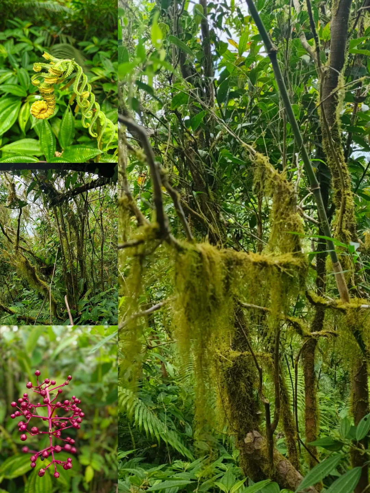
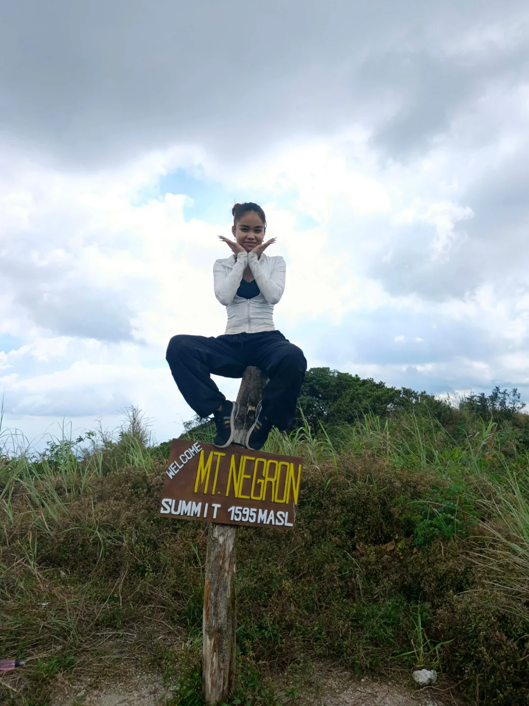
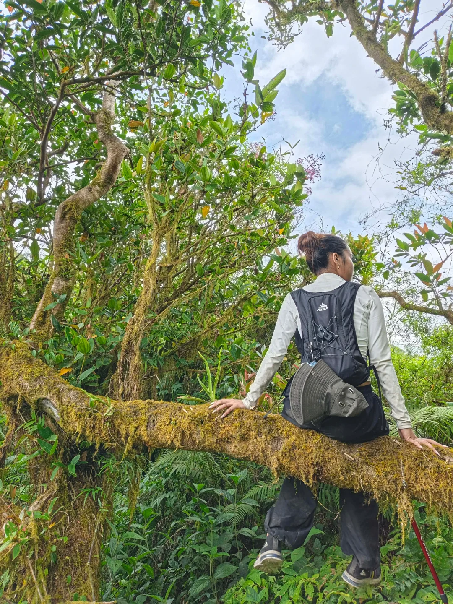

Zambales Cloud Forest
Unli-Assaults & Mossy Trails
Zambales Cloud Forest
Unli-Assaults & Mossy Trails
The trail leads deep into a fairytale cloud forest, enveloped in damp moss, curled ferns, and bright wild mountain berries. But behind the beautiful greenery lies the exhausting reality of Negron's infamous 90° near-vertical assaults. Grabbing onto tree roots and mossy branches became essential for dragging our bodies upward through the steep, muddy terrain.